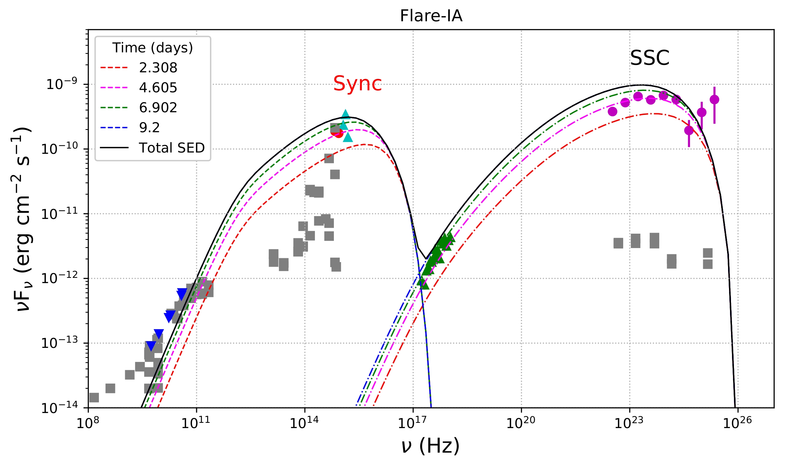

Research Overview
My research focuses on high-energy astrophysics, with an emphasis on understanding the physical processes governing emission from relativistic jets in Active Galactic Nuclei (AGN). Using multi-wavelength observations and theoretical modeling, I investigate particle acceleration, radiation mechanisms, and their possible connection to high-energy neutrinos.
Highlighted Research
Spectral Modelling of Flares of PKS 0903-57
Timing and spectral study of the flares to understand the emission mechanism of PKS 0903-57.

Broadband SED modelling of one of the flaring states of PKS 0903-57.
Multi-wavelength Study of Markarian 180 (Mrk 180)
Investigation of emission mechanisms through long-term multi-band observations, and assessment of its potential as a UHECR source contributing to the TA hotspot.

Leptonic + hadronic (pp) modeliing of long-term broadband SED of Mrk 180.